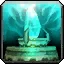
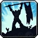
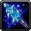
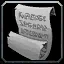
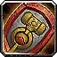

En bref
12 jouets de WoW Forever (table des jouets des fichiers du jeu) avec l’icône du jeu, le nom officiel français et anglais et l’obtention quand elle est connue (8).[3] Données du jeu (client 1.60.1.70862)
Points clés
- 12 jouets, tous illustrés par l’icône du jeu.[3] Données du jeu (client 1.60.1.70862)
- Officiels : la réplique de carabine de Forgefer (héritage) et le Puits de vent shen’dorei (pack des Éolides).[1][2]
- 4 jouets fabriqués par l’ingénierie, avec la recette (fichiers du jeu).[3] Données du jeu (client 1.60.1.70862)
Comment lire cette liste
Les noms français et anglais, la qualité, la faction, le niveau requis, le prix et l’effet viennent des fichiers du jeu (client 1.60.1.70862). L’obtention « officielle » vient des articles Blizzard cités. Les quêtes, PNJ et zones viennent de données de quêtes du jeu complétées par des joueurs : elles restent à confirmer. Quand les fichiers du jeu ne disent pas comment obtenir un élément, la fiche l’écrit (« non indiquée ») : rien n’est ajouté de mémoire ni d’après une autre version du jeu. Le prix inscrit dans les fichiers du jeu ne prouve pas qu’un vendeur le vende dans Forever, et la présence d’un élément dans ces fichiers ne prouve pas qu’il soit obtenable dans Forever.[3][4] À confirmer
Chaque fiche montre l’icône officielle de l’objet, lue dans les fichiers du jeu WoW Forever (client 1.60.1.70862) et seulement convertie au format WebP, sans retouche (images du jeu © Blizzard Entertainment). Quand aucune image du jeu n’existe pour un élément, aucune image n’est affichée.[3] Données du jeu (client 1.60.1.70862)
Par moyen d’obtention
| Groupe | Jouets |
|---|---|
| Héritage | 1 |
| Pack boutique | 1 |
| Artisanat | 4 |
| Récompenses de quête | 2 |
| Obtention non indiquée | 4 |
Héritage — 1
Récompense d’héritage du lancement (officiel) ; dans les fichiers du jeu, le jouet s’appelle « Réplique de carabine à air comprimé de Forgefer dans son étui ».[1][3]

Réplique de carabine à air comprimé de Forgefer dans son étui
Holstered Replica Ironforge Air Rifle
- Obtention
- Récompense d’héritage du lancement (nommée « Réplique de carabine à air comprimé de Forgefer » par Blizzard) : points d’héritage cumulés sur le compte (palier non publié)
Récompense de la quête « Legacy Reward: Replica Ironforge Air Rifle » - Zone
- non indiquée
- PNJ
- non indiqué
- Effet
- Vous dégainez votre réplique de carabine à air comprimé de Forgefer pour une fusillade amicale.
- Référence
- objet n° 276236
Pack boutique — 1
Jouet inclus dans les packs des Éolides (officiel).[2][3]

Puits de vent shen’dorei
Shen'dorei Windwell
- Obtention
- Pack héroïque des Éolides (aussi dans le pack épique des Éolides et la Warcraft Forever Collection)
- Zone
- non indiquée
- PNJ
- non indiqué
- Prix
- 200 po (prix inscrit dans les fichiers du jeu)
- Référence
- objet n° 280740
Artisanat — 4
Jouets fabriqués par l’ingénierie : recette lue dans les fichiers du jeu (niveau de compétence requis non indiqué).[3] Données du jeu (client 1.60.1.70862)

Agrandisseur de monde
World Enlarger
- Obtention
- Artisanat : Ingénierie — recette « Agrandisseur de monde »
- Zone
- non indiquée
- PNJ
- non indiqué
- Prix
- 3 po (prix inscrit dans les fichiers du jeu)
- Prérequis
- Ingénierie (250)
- Référence
- objet n° 18660

Commande de chariotte à vapeur
Steam Tonk Controller
- Obtention
- Artisanat : Ingénierie — recette « Commande de chariotte à vapeur »
- Zone
- non indiquée
- PNJ
- non indiqué
- Prix
- 2 po (prix inscrit dans les fichiers du jeu)
- Effet
- Invoque et commande votre chariotte à vapeur.
- Référence
- objet n° 22728

Maître-neige 9000
Snowmaster 9000
- Obtention
- Artisanat : Ingénierie — recette « Maître-neige 9000 »
- Zone
- non indiquée
- PNJ
- non indiqué
- Prix
- 3 po (prix inscrit dans les fichiers du jeu)
- Prérequis
- Ingénierie (190)
- Effet
- Permet à un ingénieur expérimenté de transformer de l’eau en boule de neige. Il faut une journée complète au Maître-neige pour fabriquer suffisamment de gel et créer une autre boule de neige.
- Référence
- objet n° 17716

Dispositif de déploiement de bannière centaure
Centaur Banner Deployment Device
- Obtention
- Artisanat : Ingénierie — recette « Dispositif de déploiement de bannière centaure »
- Zone
- non indiquée
- PNJ
- non indiqué
- Prix
- 25 pa (prix inscrit dans les fichiers du jeu)
- Référence
- objet n° 269900
Récompenses de quête — 2
Jouets donnés par une quête (fêtes saisonnières, Orneval). Données de quêtes, à confirmer.[3][4] À confirmer

Réplique de bâtonnet de transformation de Dartol
Replica Dartol's Rod of Transformation
- Obtention
- Récompense de la quête « Raene's Cleansing » (niveau 30) — Alliance
- Zone
- Orneval
- PNJ
- Krolg (Orneval 50.8, 75.1)
- Référence
- objet n° 276242

Lanterne d'Elune
Elune's Lantern
- Obtention
- Récompense de la quête « Elune's Blessing » (niveau 60)
- Zone
- Reflet-de-Lune
- PNJ
- Valadar Starsong (Reflet-de-Lune 53.7, 35.3)
- Effet
- Crée une pierre d’Elune. Nécessite une pierre solide.
- Référence
- objet n° 21540
Obtention non indiquée — 4
Jouets présents dans les fichiers du jeu ; leur obtention n’y figure pas.[3] Données du jeu (client 1.60.1.70862)

Symboles de voyage
Traveler's Symbols
- Obtention
- Non indiquée dans les fichiers du jeu
- Zone
- non indiquée
- PNJ
- non indiqué
- Prix
- 1 po 84 pa 75 pc (prix inscrit dans les fichiers du jeu)
- Effet
- Vous placez un panneau de voyageur qui dure 1 min. Il est possible d’y inscrire un message, ce qui porte sa durée à 1 h et la rend visible par les autres personnages-joueurs.
- Référence
- objet n° 221315

Panneau d’artisanat nain
Dwarven Tradeskill Signpost
- Obtention
- Non indiquée dans les fichiers du jeu
- Zone
- non indiquée
- PNJ
- non indiqué
- Référence
- objet n° 270868

Panneau d’artisanat orc
Orcish Tradeskill Signpost
- Obtention
- Non indiquée dans les fichiers du jeu
- Zone
- non indiquée
- PNJ
- non indiqué
- Référence
- objet n° 270870

Vin chatoyant de Lune-d’Argent éternel
Everlasting Silvermoon Shimmerwine
- Obtention
- Non indiquée dans les fichiers du jeu
- Zone
- non indiquée
- PNJ
- non indiqué
- Prix
- 2 po 50 pa (prix inscrit dans les fichiers du jeu)
- Effet
- Vous vous versez un verre de vin chatoyant de Lune-d’Argent.
- Référence
- objet n° 276896
Historique des corrections
17 novembre 2026 (v41, publiée avec la v42) : fiches illustrées par les icônes du jeu, regroupées par moyen d’obtention ; noms français officiels et prix repris des fichiers du jeu (client 1.60.1.70862) ; quêtes et PNJ des données de quêtes, à confirmer. Remplace l’ancien tableau.[3] Données du jeu (client 1.60.1.70862)
Ce qui est confirmé / ce qui reste à confirmer
Confirmé par les sources officielles
Reste à confirmer
- Obtention des jouets sans indication (vendeur, butin) : non publiée.
- Quêtes de fête et d’Orneval : données de quêtes, à confirmer.
Dates clés
Sources
- [1] Découvrez le système d’héritage de World of Warcraft: Forever (FR) · publié le · consulté le
Get to Know the World of Warcraft: Forever Legacy System (EN) · publié le · consulté le - [2] Achetez les avantages de World of Warcraft: Forever et lancez-vous dans vos prochaines aventures sur Azeroth (FR) · publié le · consulté le
Purchase World of Warcraft: Forever Upgrades and Begin Your Next Journey in Azeroth (EN) · publié le · consulté le - [3] WoW Forever client files, build 1.60.1.70862 — data tables and icons read from Blizzard’s official CDN (EN) · date de publication non indiquée · consulté le Données du jeu — client 1.60.1.70862
- [4] Quest data JSON (Forever game data 1.60.1, partly completed by player-addon contributions; 64 files consulted) (EN) · date de publication non indiquée · consulté le Source non officielle — à confirmer
Sources officielles Blizzard Entertainment (droits réservés). Ce wiki en propose une synthèse originale ; seules de courtes citations sont reproduites. Les informations annoncées peuvent évoluer avant ou après le lancement. Les sources marquées « données du jeu » viennent des fichiers du client WoW Forever (build 1.60.1.70862). Ce n’est pas une confirmation officielle de Blizzard. Les sources marquées « à confirmer » ne sont pas des sources officielles Blizzard (base de fans ou extrait sans tampon de build) : les informations qui ne reposent que sur elles restent à confirmer.
Version documentaire : World of Warcraft: Forever — annonces officielles et fichiers du jeu (client 1.60.1.70862), état documentaire 2026-11-17 · révision 16